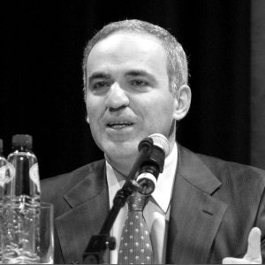
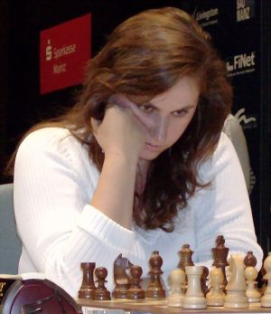

A sakk története a legendák világába nyúlik vissza. Egy ismert mese szerint egy brahmin találta ki a sakkot. Jutalmul a rádzsától első hallásra jelentéktelennek tűnő fizetséget kért, mindössze annyi búzaszemet, amennyi a sakktábla kockáira a következő szabály szerint képletesen rátehető: az első kockára egy, a másodikra kettő, a harmadikra négy, vagyis az előzőnek mindig duplája. Hamar kiderült, hogy ennyi búza nem terem a Földön, sőt az emberiség egész történelme alatt nem termelt ennyit. Az első ismert sakkváltozat valószínűleg Indiában alakult ki. A csaturanga (chaturanga) a modern sakkhoz képest leegyszerűsített volt. Ugyanakkora táblán játszották, ugyanazokkal a figurákkal, de a bábok mozgatása néhány szabályban eltért, és kevesebb mozgásteret adott. Európába a sakk arab közvetítéssel jutott, és közben olyan változtatásokat alkalmaztak, ami elvezetett a mai modern sakkig. Európában olyan játékokat szorított ki, mint a viking sakk.
Magnus Carlsen : A legmagasabb Élő-pontszámot elért norvég versenyző A legmagasabb pontszámmal rendelkező világbajnok (2013−)

Gari Kaszparov: A legmagasabb Élő-pontszámot elért orosz versenyző Korábbi világbajnok (1985−2000) Az első versenyző, aki átlépte a 2800-as határt.

Polgár Judit : A legmagasabb Élő-pontszámot elért női versenyző